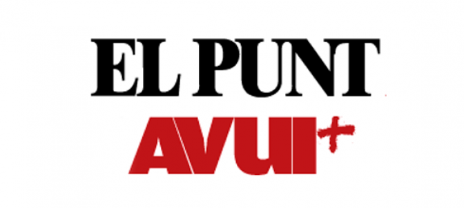

La Vanguardia
La Vanguardia es un periódico español fundado en 1881 por los hermanos Carlos y Bartolomé Godó. A lo largo de su historia, ha tenido una orientación política que ha variado según los contextos históricos y sociales.
En la actualidad, La Vanguardia se considera un periódico de orientación liberal y centrista, que busca mantener una línea editorial equilibrada y respetuosa con las diferentes corrientes políticas. Según un análisis de los medios de prensa españoles, La Vanguardia se sitúa en el centro político, lejos de la izquierda y la derecha extremas.
Saber más
Punt Avui

El Punt Avui es un diario catalán que nació en 2011 a partir de la fusión de dos cabeceras históricas: l’Avui (nacido en 1976) y El Punt (en 1979). En cuanto a su orientación política, se puede decir que es un diario de centroizquierda y progresista, con una línea editorial que defiende la independencia de Cataluña y la promoción de la cultura catalana.
Saber más